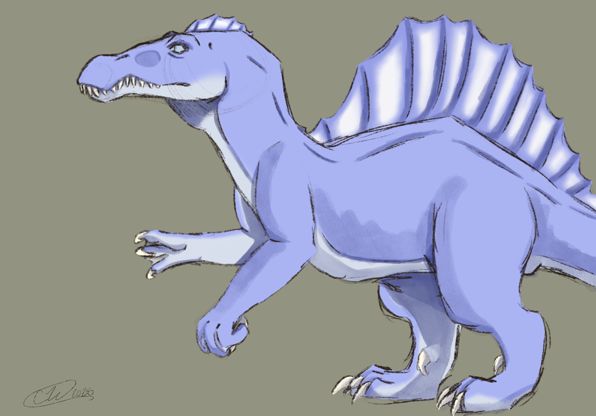

Hi! My name is Charity, and I'm passionate about art, music, and web development.
My Favorite Dinosaur
Did you know my favorite dinosaur is the mighty Spinosaurus? It's known for its sail-like back and aquatic abilities.
Hobbies I Love
- Creating art, especially digital and traditional mediums
- Listening to and exploring new music
- Gaming and exploring virtual worlds
- Cooking delicious meals for friends and family
- Driving around Florida's scenic spots